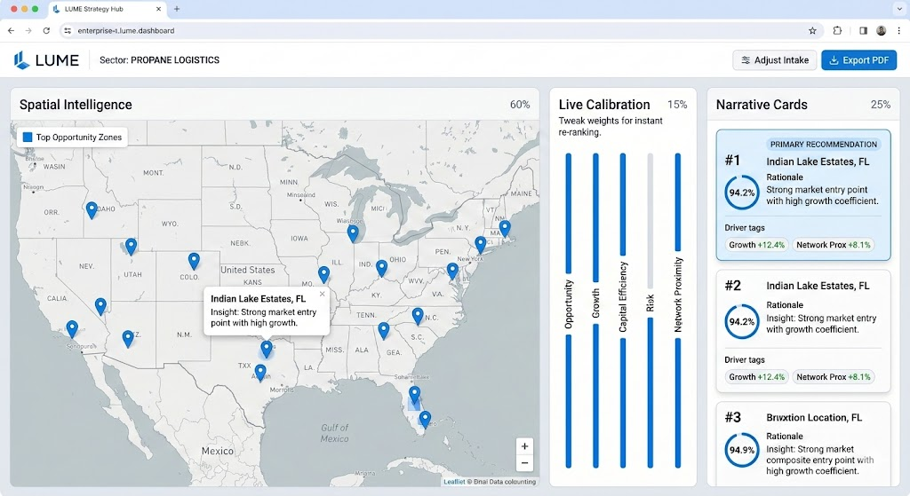

Your business runs on data — but getting clean, reliable, location-aware intelligence shouldn't be this hard. NEXData bridges the gap with AI-powered automation and deep spatial expertise.
We listen to your challenge, design a solution using the right tools, and deliver results you can act on. No jargon. No unnecessary complexity. Just data that works.
We combine AI automation, spatial intelligence, and decades of industry experience to turn scattered data into clear business advantage.
We automatically collect, verify, and standardize building permit data from thousands of government sources — delivering accurate, geo-referenced information for planning and investment decisions.
See your data on a map. Interactive spatial tools, location analysis, and geo-referenced datasets help you understand where opportunities and risks exist — and make smarter decisions.
Our LUME strategy hub combines spatial intelligence, opportunity scoring, live calibration, and narrative insights — giving you a clear picture of where to invest and why.
Our network of intelligent AI agents does the heavy lifting — mining data, cleaning records, verifying accuracy, and finding patterns. AI is our most powerful tool, not just a buzzword.
LUME is NEXData's flagship spatial intelligence platform. It combines market data, AI-driven opportunity scoring, and interactive maps to help you find the right locations for growth.

We start with your question — in plain language.
AI agents gather, clean, and verify from public sources.
We structure and geo-reference for your needs.
Maps, dashboards, APIs — configured and tested.
Answers you can act on, with ongoing support.
We don't use AI for the sake of it. We deploy intelligent agents that continuously mine, verify, and enhance data — automating what used to take teams of analysts weeks. The result? Cleaner data, faster insights, and decisions backed by verified intelligence. AI works behind the scenes so you can focus on what matters.
Spot growth trends and opportunities before competitors
Standardized permit data for smarter land use decisions
Verified, geo-referenced development data for projects
Track construction activity and housing trends by region
Overlay development data with environmental assessments
Understand where development is heading to plan ahead
Let's talk about what better data could do for your business.